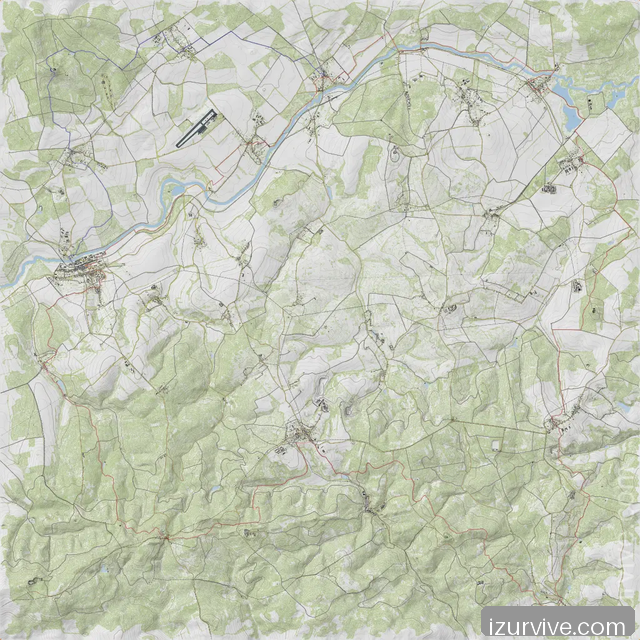

Jogadores online6/504 com posição recente
CENTRO TÁTICO
Livonia em uma única visão.
Jogadores, eventos, mortes, hotspots e pontos privados com filtros claros e atualização contínua.
Mortes · 1 hora3ADM correlacionado
Eventos ativos2Central Economy
Áreas quentes4células de 500 m
LIVONIA
Área tática

N
Mova o cursor sobre o mapa
BHC COMMERCE
Compre e escolha a entrega no mapa.
Saldo por tempo jogado, catálogo simples e entrega preparada para o próximo reset.
SEU SALDO1.250 moedas
CATÁLOGO